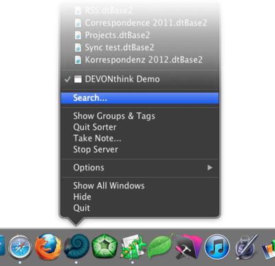

|
|
Dock menu |
|
The Dock menu appears when you click DEVONthink Pro Office's icon in the Dock with the ⌃ key pressed, when you right-click it, or when you left-click it and hold the mouse button for one second or longer.  Use the Dock menu commands Import and Index to import or index files. Copy something to the Clipboard and use New with Clipboard to directly create a document with the Clipboard contents anywhere in your open databases. DEVONthink Pro Office will try to create a meaningful name for it. Finally, choose Take Note to open the Take Note panel. |